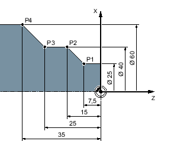
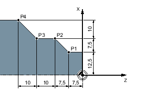

When generating a machining step program, you can input positions in absolute or incremental dimensions, depending on how the workpiece drawing is dimensioned.
You can also use a combination of absolute and incremental dimensions, i.e. one coordinate as an absolute dimension and the other as an incremental dimension.
For the face axis (the X axis, in this case), in the machine data it is established whether the diameter or radius is programmed in absolute or incremental dimensions.
Please refer to the machine manufacturer's specifications.
With absolute dimensions, all position specifications refer to the zero point of the active coordinate system.
Absolute dimensions
The position specifications for the points P1 to P4 in absolute dimensions refer to the zero point:
P1: X25 Z-7.5
P2: X40 Z-15
P3: X40 Z-25
P4: X60 Z-35
With incremental dimensions (also referred to as sequential dimensions) a position specification refers to the previously programmed point. This means that the input value corresponds to the path to be traversed. As a rule, the plus/minus sign does not matter when entering the incremental value, only the absolute value of the increment is evaluated. For some parameters, the plus/minus sign specifies the traversing direction. These exceptions are identified in the parameter table of the individual functions.
Incremental dimensions
The position specifications for points P1 to P4 in incremental dimensions are as follows:
P1: X12.5 Z-7.5 (relative to the zero point)
P2: X7.5 Z-7.5 (relative to P1)
P3:X0 Z-10 (relative to P2)
P4: X10 Z-10 (relative to P3)